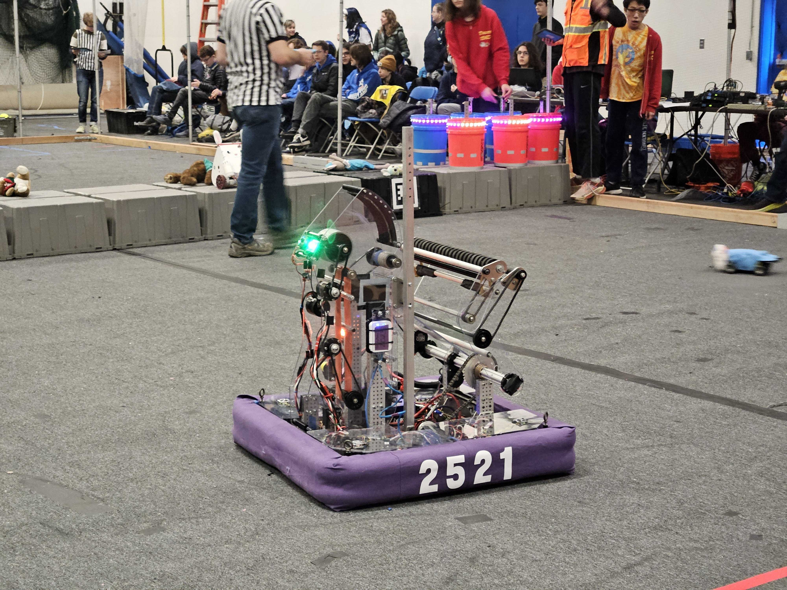

Yahaha, you found me!
My name is Kona Watson, I’m a sophomore at South Eugene High School in Eugene, Oregon.
I have taken multiple CTE classes including Math for Aviation, Introduction to Engineering Design, and Computer Fundamentals. I am also on the software subteam of the South Eugene Robotics Team.
I helped code this year’s robot, including making subsystems and commands for the wrist and flywheel. I learned about FeedForward and PID control loops as well as how to tune these systems.

This website was made by Kona Watson using GitHub.